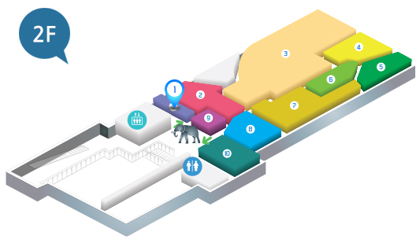

HOME>전시소개>생명진화관
생명진화관
서대문자연사박물관 전시실은 총 3개의 관으로 이루어져 있으며,
태초의 자연과 대자연의 역사 등을 만나보실 수 있습니다.

생명의 기원과 탄생
생명이 언제 어떻게 지구상에 나타났는가? 이것은 모두가 알고자 하는 수수께끼일 뿐만 아니라 철학이나 신학의 과제이기도 한 매우 어려운 문제입니다. 오늘날 생명의 기원에 관한 과학자들의 견해는 생물이 무생물에서 진화, 발전해 왔다는 것입니다. 40억 년 전 이미 지구상에는 바다와 대기가 있었습니다. 과학자들은 무생물에서 생물이 진화되는 과정은 대략 그 무렵부터 시작되었다고 봅니다. 생물학적 진화 가운데 비교적 그 역사가 잘 해명되어 있는 것은 6억 년 전 이후입니다.